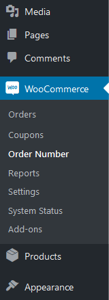
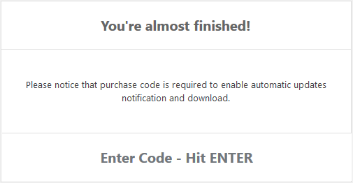

Woo Custom and Sequential Order Number
Generate Custom and Sequential Order Number
- created: 27/10/2016
- latest update: 18/02/2021
- by: VJinfotech
- email: support@vjinfotech.com
Thank you for purchasing our Woo Custom and Sequential Order Number. If you have any questions that are beyond the scope of this help file, please feel free to email via my user page contact form here. Thanks so much!
Introduction
Woo Custom and Sequential Order Number plugin has been conceived to solve one of the most annoying problems for the e-commerce owners. Bypassing the issue of the custom and sequential numeration for every kind of created element (both articles or products), the plugin grants you a superior control over a consecutive numeration for the created order of your store.
Woo Custom and Sequential Order Number plugin allowing you to have custom ad Sequential order numbers rather than random ones
Woo Custom and Sequential Order Number plugin has give you complete control over your order numbers, combined with the peace of mind
Installation
Woo Custom and Sequential Order Number Plugin requires WordPress 3.7+
Woo Custom and Sequential Order Number Plugin has been successfully tested with WooCommerce 2.x to 5.x
Just like every plugins, just copy the woo-custom-and-sequential-order-number folder in your wp-content/plugins folder then activate it through WordPress dashboard. The plugin is only accessible for Admin's.
Optional configuration settings to customize the order number can be found by going to WooCommerce > Order Number
Features
- Provides Custom and Sequential order numbers rather than display id and random number
- Provides Order custom fields and other variable supports.
- Auto Manage all order numbers.
- Even And Odd Number Supported
- Increment by any Number
- You can select manually the value, setting the ID from which you want to start the numeration
- any custom text or prefix or suffix or mixed value possible.
- You can identify as ``FREE ORDER`` those orders made with no costs, or those that have only free products
- Unlimited Order number Length
- Unlimited Order number Possibilities
- Supports multiple font for better style
- Fully responsive and 100% customizable
- WPML Ready
- Dedicated Support
Setup and Configuration
No configuration is required for this plugin. orders will automatically be numbered beginning at 1.
Optional configuration settings to customize the order number can be found by going to WooCommerce > Order Number

1) Enter Order Number
You can control the order number here. many variables available for generate numbers.
Order Number Sample and Formats
{order_id} : Order Id
{number_start_from:101} : Start Number From 101 and increment by 1
{date:YYYY} : Order Date with Date format. YYYY is date Format
{custom-field:my-order-custom-field} : Order Custom Fields.
Example 1 : AA-{order_id}-ZZ to AA-101-ZZ
Example 2 : AA {number_start_from:1} MM {order_id} ZZ to AA 1 MM 101 ZZ
Example 3 : ORDER-{date:Y-m-d} to ORDER-2017-12-31
Example 4 : AA {number_start_from:1}{increment:5} MM to AA 1 MM, AA 6 MM, AA 11 MM,..
Example 5 : AA {number_start_from:3}{odd_number} MM to AA 3 MM, AA 5 MM, AA 7 MM, AA 9 MM,..
Example 6 : AA {number_start_from:2}{even_number} MM to AA 2 MM, AA 4 MM, AA 6 MM, AA 8 MM,..
2) Use different numeration for Free Orders
If you don't want to send PDF with order mail than disable option available for you. just select option best for you.
3) Enter Free Order Number
You can identify as ``FREE-ORDER`` OR your custom title those orders made with no costs, or those that have only free products
Order Number Sample and Formats
{order_id} : Order Id
{number_start_from:101} : Start Number From 101 and increment by 1
{date:YYYY} : Order Date with Date format. YYYY is date Format
{custom-field:my-order-custom-field} : Order Custom Fields.
Example 1 : AA-{order_id}-ZZ to AA-101-ZZ
Example 2 : AA {number_start_from:1} MM {order_id} ZZ to AA 1 MM 101 ZZ
Example 3 : ORDER-{date:Y-m-d} to ORDER-2017-12-31
Example 4 : AA {number_start_from:1}{increment:5} MM to AA 1 MM, AA 6 MM, AA 11 MM,..
Example 5 : AA {number_start_from:3}{odd_number} MM to AA 3 MM, AA 5 MM, AA 7 MM, AA 9 MM,..
Example 6 : AA {number_start_from:2}{even_number} MM to AA 2 MM, AA 4 MM, AA 6 MM, AA 8 MM,..
Plugin License
After activating the plugin, you need to activate your license for support and automatic upgrades. You will get all Feature only after activating your license. A license key only be used for one installation of WordPress at a time. Click on WooCommerce > Order Number for activate your license. You will see below section there on that page. To activate your license, you need to enter your purchase code( Unique code obtained while purchased this product.
Demo
Username : demo
Username : demo